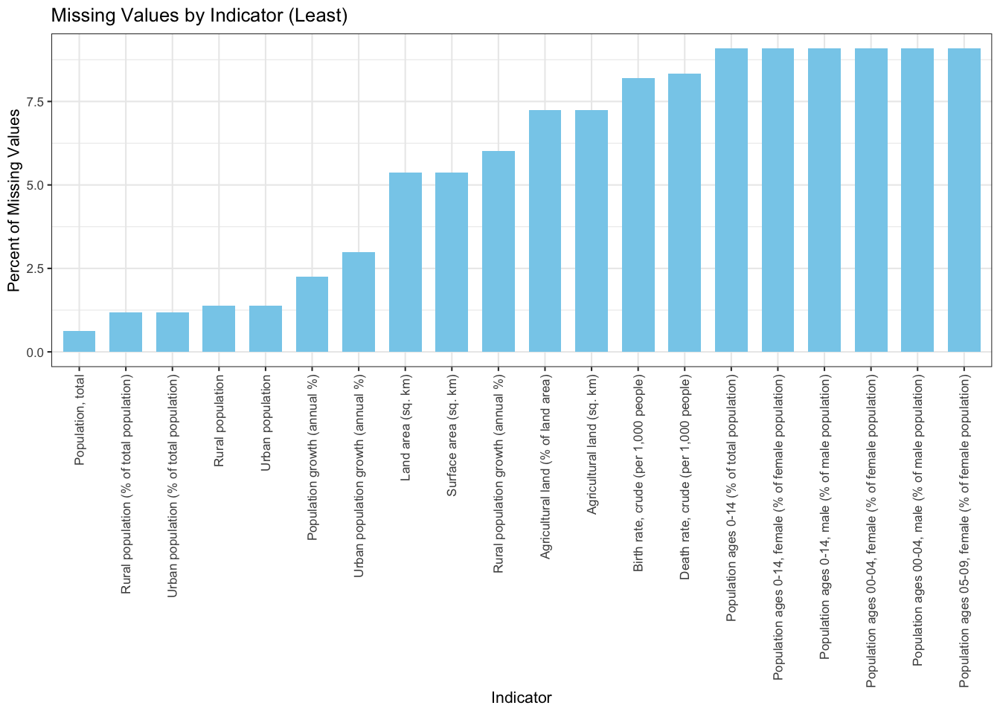
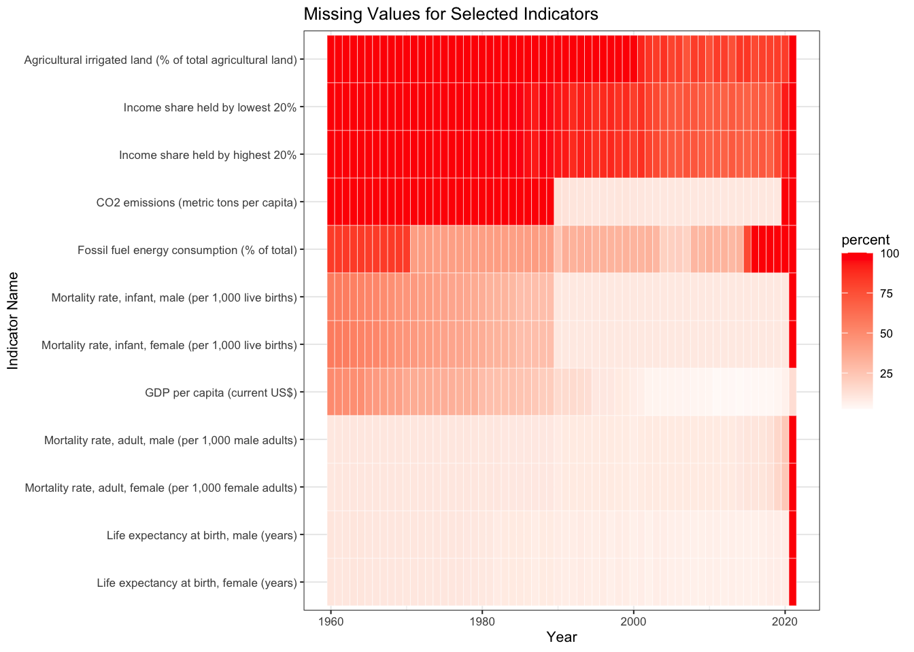

Chapter 3 Data
3.1 Sources
We have used the World Development Indicators dataset, a compilation of relevant, comparable statistics about global development and the fight against poverty. This dataset is compiled by the World Bank and the original source of their data is primarily the latest version of reports gathered by the Bank’s country management units. The Development Data Group at the World Bank guides the data collection and compilation process to ensure that the data is of the highest quality and integrity. This group utilizes internationally accepted standards, resulting in consistent and reliable data sources.
It is the most current and accurate global development data available including national, regional and global estimates and is updated regularly depending on new data available on the indicators. There are two ways for users to access this data: a bulk download (files are revised whenever WDI is updated) or via the World Bank Indicators API. For our project, we have downloaded the data as it can be imported into R with ease, is readily accessible and since it has a quarterly update frequency, we can easily update the data file every quarter manually.
The World Development Indicators dataset includes 1,600 indicators for a total of 217 economies and more than 45 country groups. The dataset consists of 383,572 unique records. Data for most indicators extends back more than 50 years, from 1960 to 2020 (4). The indicators are primarily organized into six overarching categories: Poverty and Inequality, People, Environment, Economy, States and Markets, and Global Links.
A known issue prior to analyzing this dataset was data inconsistency. There are a number of reasons as to why data is not available for a given indicator across all countries and years. For certain indicators, data is collected from sporadic surveys that are only conducted every few years. Some indicators such as ‘Balance of Payments’ only started in 2005 because it was only initiated that year; thus no data exists for the earlier years. On the other hand, some data is also inconsistent at a country level. For example, countries such as North Korea, Somalia, certain Caribbean and Pacific islands, etc. do not report data consistently due to conflict, lack of statistical capacity, or other reasons. Lastly, countries such as South Sudan, Eritrea, etc. do not have data from 1960 simply because they did not exist (5).
3.2 Cleaning / transformation
The definition of tidy depends on the underlying task. Our data (accessed through a .csv file) was not in tidy format. Consequently, we transformed it into the long format to be compatible with ggplot2 in R.
The schema for the above loaded dataset is:
Columns:
- Country.Name
- Country.Code
- Indicator.Name
- Indicator.Code
- 1960
- 1961
- …
- 2020
- 2021
We convert it to long format such that the new data frame has columns:
- Country.Name
- Country.Code
- Indicator.Name
- Indicator.Code
- Year
- Value
This way we can use it in R to create visualizations using ggplot2. The following piece of code does the following.
3.3 Missing value analysis
We observe that the data has a lot of missing values. Given the vastness of the data, it is expected. We think the missing values are because of the following potential reasons: 1. Not all countries have had definite metrics to measure indicator performances since 1960. 2. Data collection is a tedious task and there can be inconsistencies while doing that. 3. Some indicators might have become relevant only after a certain year.
Further, we draw up some visualizations to observe these trends and confirm our initial hypotheses with regards to missing values.
3.3.1 Missing Values by Country
Given that we have data for around 266 Countries, it is expected that not all countries will have all values. To show this, we draw a bar chart depicting the percentage of missing values by country arranged in a non-increasing manner. We observe the following: 1. We see that there are a few entries whose country is specified as Not Classified. 2. Since the countries are arranged in decreasing order of the percentage of missing values, it is evident that none of the countries have 0% missing values. However, this stat is not significant as some countries have come under the radar of international scope only recently.

We will draw a magnified version of this plot by considering the top 20 countries in terms of the most missing values.

We observe that: 1. There is a category for country name which is called not specified and (almost) all its values are missing. 2. The other countries/regions with such a high percentage of missing values are small countries. They are under-developed or developing nations, and might have come into existence only recently.
3.3.2 Missing values by Indicator
After looking at missing values from the perspective of Countries, we now try to look at them from the point of view of indicators. We plot the percentage of missing values in a non-decreasing manner. We observe the following: 1. There are few to none gaps in the barplot indicating that mostly all indicators have missing values for some country or for some year.

We analyze two tails of the below plot in a magnified version and understand why certain indicators have a high or a low percentage of missing values.
Consider the front tail of the above plot. It is plotted in its magnified form below.  We can observe from the above plot that no indicator has 0% missing values. Naturally, the most basic indicator ‘Population’ has the least percentage of missing values. These missing values can be due to lack of data collection for some countries who only became relevant recently. Other indicators like land area, birth rate, death rate, etc., also realize a low percentage of missing values due to their pervasiveness and ease of collection. Let’s analyze the rear tail of the chart now.
 Observe that these indicators are somewhat complicated. The indicators plotted in the above plot are more people specific, for example, ‘Number of people spending more than 25% of household consumption or income on out-of-pocket health care expenditure’. Getting this data is a difficult job. In developed countries, it is possible that such stats are measurable given the cohesive infrastructure they have built. But in under-developed nations, there is no relevance of such indicators. A similar reasoning can be given for other indicators plotted above.
Observe that these indicators are somewhat complicated. The indicators plotted in the above plot are more people specific, for example, ‘Number of people spending more than 25% of household consumption or income on out-of-pocket health care expenditure’. Getting this data is a difficult job. In developed countries, it is possible that such stats are measurable given the cohesive infrastructure they have built. But in under-developed nations, there is no relevance of such indicators. A similar reasoning can be given for other indicators plotted above.
3.3.3 Missing Values by Year
We plot two graphs. One shows the overall trend for years as drawn above for Indicators and Countries. The second is a tile plot (heatmap), which shows the percentage of missing values for a given year and indicator. Since the number of indicators are huge, we select a few which we would be working with in the next section.

We see that basic indicators like Life Expectancy, GDP, Mortality Rates have fewer missing values across all years. Moving towards the top of the graph, we observe that indicators like CO2 Emissions, Agricultural Land, and Income Share have a higher share in the missing values. Another anomaly in the dataset is seen through this plot, i.e., for the year 2021, almost all indicators have 100% missing values. This can be due to the update frequency of the dataset. Consequently in our further analysis, we consider 2020 as the latest year whenever we want to visualise the latest trends.